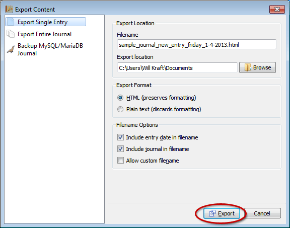

for version 0.5
Exporting Journal Entries
Sections
Overview
RoboJournal stores all journals as databases. Databases like MySQL are not discrete files on your hard drive; instead, they are abstract entities you work with through an intermediary program like RoboJournal. The intermediary program relays data between the client (your computer) and the actual journal database residing on the host. While the journal appears to be on your computer, this is not truly the case unless you are running the database server on localhost. Since the journal databases are abstract entities, it is normally difficult to extract data from them unless you dump the entire database to disk as a file (the most common backup method). Fortunately, RoboJournal's Entry Exporter tool provides a way to directly extract journal content (in part or in whole) from its database in a form that can be easily backed up or copied.
RoboJournal's entry exporter has been dramatically expanded and re-designed in version 0.5 (and later). The new design features a page-based interface, much like the new Journal Creator and the new Preferences window introduced in version 0.4. Unlike the old entry exporter (which separated functionality by use of a tabbed widget in a way that could potentially be confusing) the new design separates functionality by page; each page is dedicated to a a specific type of export operation. The Export Content window always displays the Export single entry page by default.
The entry exporter is invoked the same was as in previous versions. Select
the entry you wish to export (or any entry, if you wish to export the entire
journal) and click the Export Entry toolbar button: Figure 1: Select an entry (indicated
by the large oval) and click the Export Content toolbar button
to display the Export Content dialog.
Figure 1: Select an entry (indicated
by the large oval) and click the Export Content toolbar button
to display the Export Content dialog.
The Export Content window is displayed: Figure 2: The Export Content window is
displayed with the selected entry already pre-loaded.
Figure 2: The Export Content window is
displayed with the selected entry already pre-loaded.
Exporting a Single Entry
Unless you have selected a different page, the Export Content window should already be configured to export the entry you previously selected immediately before clicking the Export Content toolbar button on the RoboJournal main window. Figure 3: The Export single entry page allows you to export the current (selected) entry from the main window.
If you need to change any of the settings (including file type or export destination), you must do so before beginning the export operation. Unlike other procedures, further user input is completely optional; you only need to click the Export button (as indicated by the red oval in Figure 3) to complete the process using the current options. The current options determine the type and properties of the file produced by the next export operation.
The following table explains each option on the Export single entry page in greater detail:
| Filename | The Filename field determines what name the entry content is saved under on your hard drive. |
| Export Location | |
| Export Format | |
| Include entry date in filename | |
| Include journal in filename | |
| Allow custom filename |
Exporting the Entire Journal
As previously stated, RoboJournal allows you to export an entire journal at once. This is much faster and produces better results than the only other alternative method (manually exporting the journal one entry at a time) because it loops through the entire journal and appends each entry to a single file.
Backing Up the Database
Copyright © 2013 by Will Kraft. All parts of the RoboJournal Documentation are covered by the terms of the GNU Free Documentation License.